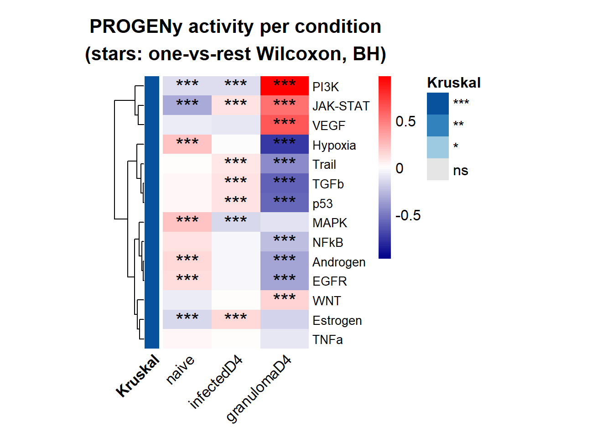
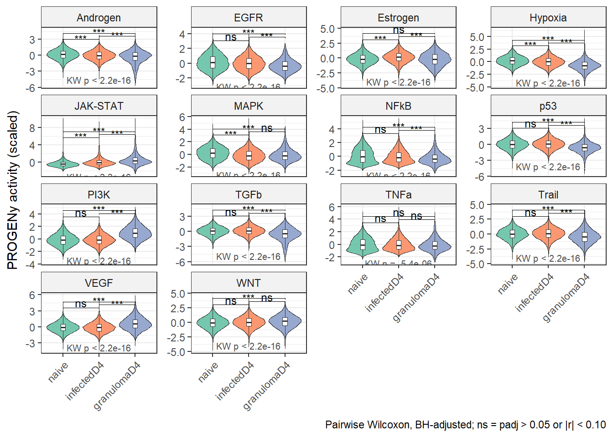
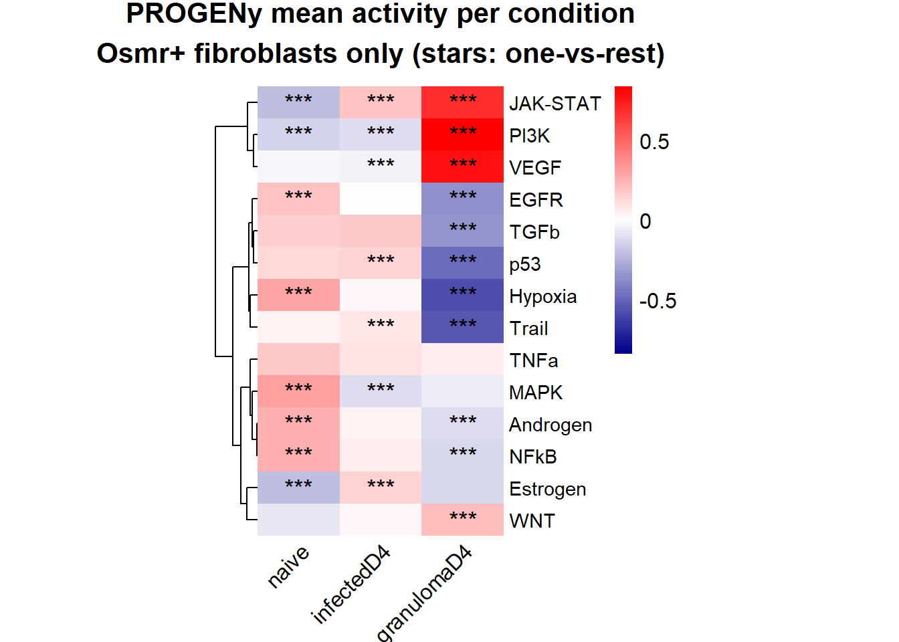
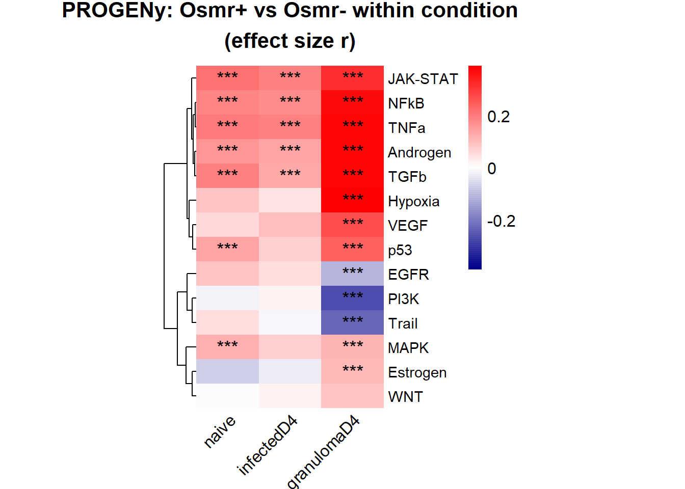
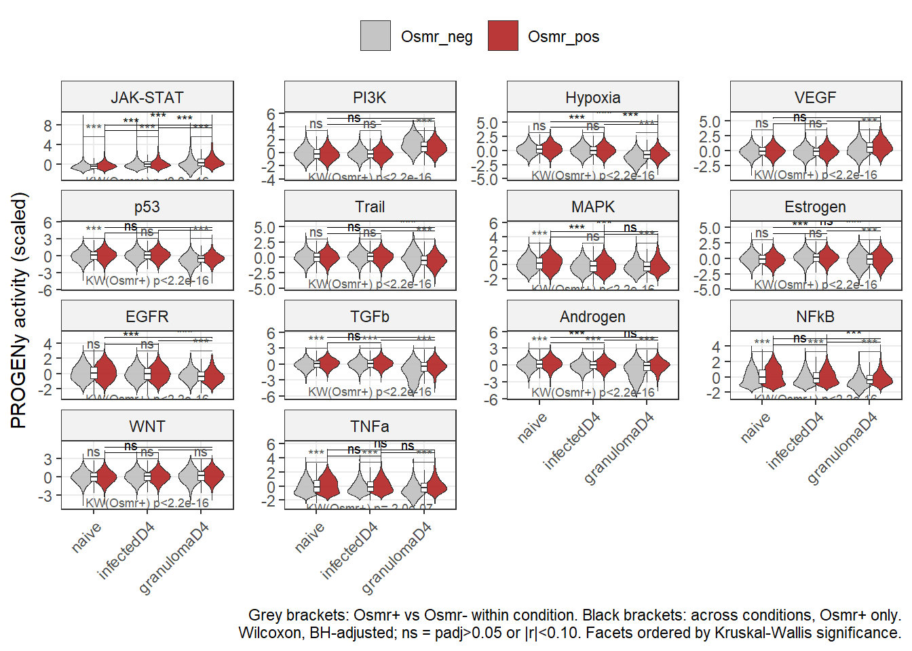

Last updated: 2026-08-11
Checks: 6 1
Knit directory: FB_Hpb_revision/
This reproducible R Markdown analysis was created with workflowr (version 1.7.2). The Checks tab describes the reproducibility checks that were applied when the results were created. The Past versions tab lists the development history.
The R Markdown is untracked by Git. To know which version of the R
Markdown file created these results, you’ll want to first commit it to
the Git repo. If you’re still working on the analysis, you can ignore
this warning. When you’re finished, you can run
wflow_publish to commit the R Markdown file and build the
HTML.
Great job! The global environment was empty. Objects defined in the global environment can affect the analysis in your R Markdown file in unknown ways. For reproduciblity it’s best to always run the code in an empty environment.
The command set.seed(20260811) was run prior to running
the code in the R Markdown file. Setting a seed ensures that any results
that rely on randomness, e.g. subsampling or permutations, are
reproducible.
Great job! Recording the operating system, R version, and package versions is critical for reproducibility.
Nice! There were no cached chunks for this analysis, so you can be confident that you successfully produced the results during this run.
Great job! Using relative paths to the files within your workflowr project makes it easier to run your code on other machines.
Great! You are using Git for version control. Tracking code development and connecting the code version to the results is critical for reproducibility.
The results in this page were generated with repository version 0c7e078. See the Past versions tab to see a history of the changes made to the R Markdown and HTML files.
Note that you need to be careful to ensure that all relevant files for
the analysis have been committed to Git prior to generating the results
(you can use wflow_publish or
wflow_git_commit). workflowr only checks the R Markdown
file, but you know if there are other scripts or data files that it
depends on. Below is the status of the Git repository when the results
were generated:
Ignored files:
Ignored: .Rproj.user/
Untracked files:
Untracked: PROGENy_OsmrPos_vs_Neg_byCondition.csv
Untracked: PROGENy_Osmrpos_KruskalWallis.csv
Untracked: PROGENy_Osmrpos_pairwise.csv
Untracked: PROGENy_depthCheck.csv
Untracked: PROGENy_violins_allPathways.pdf
Untracked: analysis/20260811_PROGENy.Rmd
Untracked: analysis/PROGENy_OsmrPos_vs_Neg_byCondition.csv
Untracked: analysis/PROGENy_Osmrpos_KruskalWallis.csv
Untracked: analysis/PROGENy_Osmrpos_pairwise.csv
Untracked: analysis/PROGENy_depthCheck.csv
Untracked: analysis/PROGENy_violins_allPathways.pdf
Note that any generated files, e.g. HTML, png, CSS, etc., are not included in this status report because it is ok for generated content to have uncommitted changes.
There are no past versions. Publish this analysis with
wflow_publish() to start tracking its development.
library(ExploreSCdataSeurat3)
library(runSeurat3)
library(Seurat)
library(ggpubr)
library(pheatmap)
library(SingleCellExperiment)
library(dplyr)
library(tidyverse)
library(viridis)
library(muscat)
library(circlize)
library(destiny)
library(scater)
library(metap)
library(multtest)
library(clusterProfiler)
library(org.Mm.eg.db)
library(msigdbr)
library(enrichplot)
library(DOSE)
library(grid)
library(gridExtra)
library(ggupset)
library(VennDiagram)
library(progeny)
library(tidyr)
library(tibble)
library(ggplot2)##load object merged allFb naive and d4
fileNam <- "/R/Cxcl13Hpb/data/merged_allFb_naiveANDd4_seurat.rds"
seuratFb <- readRDS(fileNam)
table(seuratFb$dataset)
10_20190604_Mouse_LP_Cxcl13cre_IL33flfl_EYFP_v3
6591
10_20200923_Mu_LP_Cxcl13Cre_EYFP_HpD4_v3
7409
10_20210624_Mu_granuloma_Cxcl13Cre_IL33flf_EYFP_HpD4_v3
627
11_20190604_Mouse_LP_Cxcl13cre_EYFP_v3
4561
12_20190604_Mouse_LP_Cxcl13cre_EYFP_v3
7301
7_20200923_Mu_LP_Cxcl13Cre_IL33flfl_EYFP_HpD4_v3
7816
8_20200923_Mu_LP_Cxcl13Cre_IL33fllf_EYFP_HpD4_v3
5899
9_20190604_Mouse_LP_Cxcl13cre_IL33flfl_EYFP_v3
6792
9_20200923_Mu_LP_Cxcl13Cre_EYFP_HpD4_v3
8550
9_20210624_Mu_granuloma_Cxcl13Cre_EYFP_HpD4_v3
1177
o289411_1-1_20220629_Mu_granuloma_Cxcl13Cre_CD45_HpD4_v3
4
o289411_2-2_20220629_Mu_granuloma_Cxcl13Cre_FSC_HpD4_v3
2319
o289411_3-3_20220629_Mu_granuloma_Cxcl13Cre_IL33fl_CD45_HpD4_v3
7
o289411_4-4_20220629_Mu_granuloma_Cxcl13Cre_IL33fl_FSC_HpD4_v3
5165 table(seuratFb$cond2)
WT cko
31321 32897 seuratwt <- subset(seuratFb, cond2 == "WT")
table(seuratwt$cond2)
WT
31321 seuratFb <- seuratwt## set vector for cond2
colcond2 <- c("#202547","#BE3144")
names(colcond2) <- c("WT", "cko")
## set vector for cond2
colcond3 <- c("#B45B5C","#628395","#BF782D")
names(colcond3) <- c("infectedD4", "naive", "granulomaD4")
#colPal <- c("#355C7D", "#8E9B97","#779d8d","#0F1F38","#E84A5F","#FF847C","#F8B195", "#727077", "#C06C84","#2A363B", "#6C5B7B")
#names(colPal) <- c("0" ,"1", "2", "3", "4", "5", "6", "7", "8", "9", "10")
colPal <- c("#355C7D", "#8E9B97","#99B898","#E84A5F","#0F1F38","#FF847C","#F8B195","#6C5B7B", "#C06C84", "#727077")
names(colPal) <- c("0" ,"1", "2", "3","4", "5", "6", "7", "8", "9")
colclustername <- c("#355C7D", "#8E9B97","#99B898","#E84A5F","#0F1F38","#F8B195","#727077","#FF847C","#C06C84","#904D39")
names(colclustername) <- c("PdgfraloFb1" ,"PdgfraloFb2", "Trophocytes","PdgfraloFb3", "Telocytes","Myocytes", "Pdgfrahi", "PdgfraloFb4", "Thy1Fb", "Glial")## -------------------------------------------------------------------------
## 1. Build an expression matrix with gene SYMBOLS as rownames
## (PROGENy matches on symbols; your rownames are EnsID.Symbol)
## -------------------------------------------------------------------------
expr <- GetAssayData(seuratFb, assay = "RNA", slot = "data") # Seurat v4
symbols <- gsub("^.*\\.", "", rownames(expr))
## Resolve duplicated symbols: keep the row with highest total expression
keep <- tibble(idx = seq_along(symbols), symbol = symbols,
total = Matrix::rowSums(expr)) %>%
group_by(symbol) %>%
slice_max(total, n = 1, with_ties = FALSE) %>%
pull(idx)
expr <- expr[keep, ]
rownames(expr) <- symbols[keep]
## -------------------------------------------------------------------------
## 2. Run PROGENy (mouse, top 500 genes per pathway - recommended for scRNA)
## -------------------------------------------------------------------------
progeny_scores <- progeny(as.matrix(expr),
scale = FALSE,
organism = "Mouse",
top = 500,
perm = 1) # cells x 14 pathways
## Store as a new assay and scale pathway activities across cells
seuratFb[["progeny"]] <- CreateAssayObject(counts = t(progeny_scores))
DefaultAssay(seuratFb) <- "progeny"
seuratFb <- ScaleData(seuratFb, assay = "progeny")
## =========================================================================
## Sections 3-5 : PROGENy with statistics labelled on
## - the condition heatmap
## - the violin plots (pairwise brackets + Kruskal-Wallis per facet)
## =========================================================================
conds <- c("naive", "infectedD4", "granulomaD4")
progeny_df <- t(GetAssayData(seuratFb, assay = "progeny", layer = "scale.data")) %>%
as.data.frame() %>%
rownames_to_column("Cell") %>%
mutate(Condition = factor(seuratFb$cond3[Cell], levels = conds)) %>%
pivot_longer(-c(Cell, Condition), names_to = "Pathway", values_to = "Activity")
stars <- function(p) {
ifelse(is.na(p), "",
ifelse(p < 0.001, "***",
ifelse(p < 0.01, "**",
ifelse(p < 0.05, "*", "ns"))))
}
## Wilcoxon + rank-biserial effect size r = 2*AUC - 1
wilcox_r <- function(x, y) {
w <- suppressWarnings(wilcox.test(x, y))
data.frame(p = w$p.value,
r = 2 * (w$statistic / (length(x) * length(y))) - 1,
row.names = NULL)
}
## -------------------------------------------------------------------------
## 1. Omnibus Kruskal-Wallis (one value per pathway)
## -------------------------------------------------------------------------
pathway_stats <- progeny_df %>%
group_by(Pathway) %>%
summarise(kw_p = kruskal.test(Activity ~ Condition)$p.value,
eta2 = { # KW effect size (epsilon^2)
k <- kruskal.test(Activity ~ Condition)
unname(k$statistic) / (length(Activity) - 1)
},
.groups = "drop") %>%
mutate(kw_padj = p.adjust(kw_p, method = "BH")) %>%
arrange(kw_padj)
print(pathway_stats, n = 20)# A tibble: 14 × 4
Pathway kw_p eta2 kw_padj
<chr> <dbl> <dbl> <dbl>
1 Hypoxia 0 0.0731 0
2 JAK-STAT 0 0.0889 0
3 PI3K 0 0.0938 0
4 p53 3.23e-281 0.0412 1.13e-280
5 VEGF 8.55e-260 0.0381 2.39e-259
6 MAPK 1.97e-216 0.0317 4.59e-216
7 TGFb 6.30e-190 0.0278 1.26e-189
8 Estrogen 1.57e-174 0.0256 2.74e-174
9 Trail 8.21e-158 0.0231 1.28e-157
10 EGFR 2.07e-126 0.0185 2.90e-126
11 Androgen 2.41e- 97 0.0142 3.07e- 97
12 NFkB 1.70e- 59 0.00864 1.98e- 59
13 WNT 1.06e- 35 0.00514 1.14e- 35
14 TNFa 5.38e- 6 0.000775 5.38e- 6## -------------------------------------------------------------------------
## 2. Pairwise Wilcoxon with effect sizes
## -------------------------------------------------------------------------
contrasts <- list(c("naive", "infectedD4"),
c("naive", "granulomaD4"),
c("infectedD4", "granulomaD4"))
pairwise_res <- lapply(contrasts, function(cp) {
progeny_df %>%
dplyr::filter(Condition %in% cp) %>%
group_by(Pathway) %>%
group_modify(~ wilcox_r(.x$Activity[.x$Condition == cp[1]],
.x$Activity[.x$Condition == cp[2]])) %>%
ungroup() %>%
mutate(group1 = cp[1], group2 = cp[2])
}) %>% bind_rows() %>%
mutate(padj = p.adjust(p, method = "BH")) # BH across ALL pathway x contrast
## Effect-size gate: with thousands of cells everything is p<0.001, so only
## call something "significant" if it also moves the needle. Tune r_cut.
r_cut <- 0.1
pairwise_res <- pairwise_res %>%
mutate(label = ifelse(padj < 0.05 & abs(r) >= r_cut, stars(padj), "ns"))
print(pairwise_res, n = 60)# A tibble: 42 × 7
Pathway p r group1 group2 padj label
<chr> <dbl> <dbl> <chr> <chr> <dbl> <chr>
1 Androgen 8.42e- 55 0.109 naive infectedD4 1.47e- 54 ***
2 EGFR 4.39e- 31 0.0812 naive infectedD4 6.83e- 31 ns
3 Estrogen 2.90e-162 -0.190 naive infectedD4 9.37e-162 ***
4 Hypoxia 1.19e- 81 0.134 naive infectedD4 2.62e- 81 ***
5 JAK-STAT 0 -0.296 naive infectedD4 0 ***
6 MAPK 1.69e-203 0.213 naive infectedD4 6.45e-203 ***
7 NFkB 7.34e- 18 0.0603 naive infectedD4 1.03e- 17 ns
8 PI3K 5.58e- 2 -0.0134 naive infectedD4 6.01e- 2 ns
9 TGFb 6.05e- 8 -0.0379 naive infectedD4 7.26e- 8 ns
10 TNFa 4.88e- 1 0.00486 naive infectedD4 5.00e- 1 ns
11 Trail 2.77e- 13 -0.0511 naive infectedD4 3.64e- 13 ns
12 VEGF 3.27e- 2 0.0150 naive infectedD4 3.61e- 2 ns
13 WNT 4.18e- 12 -0.0485 naive infectedD4 5.32e- 12 ns
14 p53 7.47e- 9 -0.0405 naive infectedD4 9.23e- 9 ns
15 Androgen 8.65e- 76 0.205 naive granulomaD4 1.73e- 75 ***
16 EGFR 3.26e-120 0.259 naive granulomaD4 8.55e-120 ***
17 Estrogen 9.89e- 1 -0.000155 naive granulomaD4 9.89e- 1 ns
18 Hypoxia 0 0.518 naive granulomaD4 0 ***
19 JAK-STAT 0 -0.478 naive granulomaD4 0 ***
20 MAPK 2.54e- 77 0.207 naive granulomaD4 5.34e- 77 ***
21 NFkB 3.68e- 56 0.175 naive granulomaD4 6.72e- 56 ***
22 PI3K 0 -0.554 naive granulomaD4 0 ***
23 TGFb 6.94e-143 0.283 naive granulomaD4 1.94e-142 ***
24 TNFa 1.20e- 6 0.0539 naive granulomaD4 1.39e- 6 ns
25 Trail 2.27e-107 0.244 naive granulomaD4 5.62e-107 ***
26 VEGF 6.56e-220 -0.352 naive granulomaD4 3.06e-219 ***
27 WNT 1.40e- 34 -0.136 naive granulomaD4 2.25e- 34 ***
28 p53 1.84e-206 0.341 naive granulomaD4 7.73e-206 ***
29 Androgen 8.12e- 24 0.108 infectedD4 granulomaD4 1.18e- 23 ***
30 EGFR 1.45e- 69 0.190 infectedD4 granulomaD4 2.77e- 69 ***
31 Estrogen 2.06e- 53 0.166 infectedD4 granulomaD4 3.46e- 53 ***
32 Hypoxia 0 0.410 infectedD4 granulomaD4 0 ***
33 JAK-STAT 2.90e-103 -0.233 infectedD4 granulomaD4 6.76e-103 ***
34 MAPK 3.78e- 1 -0.00950 infectedD4 granulomaD4 3.97e- 1 ns
35 NFkB 8.59e- 31 0.124 infectedD4 granulomaD4 1.29e- 30 ***
36 PI3K 0 -0.566 infectedD4 granulomaD4 0 ***
37 TGFb 1.07e-186 0.314 infectedD4 granulomaD4 3.75e-186 ***
38 TNFa 8.80e- 6 0.0479 infectedD4 granulomaD4 9.99e- 6 ns
39 Trail 1.57e-155 0.286 infectedD4 granulomaD4 4.72e-155 ***
40 VEGF 3.65e-246 -0.361 infectedD4 granulomaD4 1.92e-245 ***
41 WNT 2.32e- 17 -0.0913 infectedD4 granulomaD4 3.15e- 17 ns
42 p53 2.49e-282 0.387 infectedD4 granulomaD4 1.49e-281 *** ## =========================================================================
## 3. HEATMAP with significance
## cells = mean activity per condition
## stars = one-vs-rest Wilcoxon (matches the grid)
## row bar = Kruskal-Wallis across all 3 conditions
## =========================================================================
ovr_res <- progeny_df %>%
group_by(Pathway) %>%
group_modify(~ {
dat <- .x
do.call(rbind, lapply(conds, function(cd) {
cbind(Condition = cd,
wilcox_r(dat$Activity[dat$Condition == cd],
dat$Activity[dat$Condition != cd]))
}))
}) %>%
ungroup() %>%
mutate(padj = p.adjust(p, method = "BH"),
lab = ifelse(padj < 0.05 & abs(r) >= r_cut, stars(padj), ""))
plot_mat <- progeny_df %>%
group_by(Pathway, Condition) %>%
summarise(avg = mean(Activity), .groups = "drop") %>%
pivot_wider(names_from = Condition, values_from = avg) %>%
column_to_rownames("Pathway") %>% as.matrix()
plot_mat <- plot_mat[, conds]
star_mat <- ovr_res %>%
dplyr::select(Pathway, Condition, lab) %>%
pivot_wider(names_from = Condition, values_from = lab) %>%
column_to_rownames("Pathway") %>% as.matrix()
star_mat <- star_mat[rownames(plot_mat), colnames(plot_mat)] # MUST align
row_anno <- pathway_stats %>%
mutate(Kruskal = cut(kw_padj, breaks = c(-Inf, 0.001, 0.01, 0.05, Inf),
labels = c("***", "**", "*", "ns"))) %>%
dplyr::select(Pathway, Kruskal) %>%
column_to_rownames("Pathway")
row_anno <- row_anno[rownames(plot_mat), , drop = FALSE]
anno_colors <- list(Kruskal = c("***" = "#08519c", "**" = "#3182bd",
"*" = "#9ecae1", "ns" = "grey90"))
lim <- max(abs(plot_mat))
myColor <- colorRampPalette(c("darkblue", "white", "red"))(100)
pheatmap(plot_mat,
color = myColor, breaks = seq(-lim, lim, length.out = 101),
display_numbers = star_mat, number_color = "black", fontsize_number = 16,
annotation_row = row_anno, annotation_colors = anno_colors,
cluster_cols = FALSE, cluster_rows = TRUE, treeheight_row = 20,
border_color = NA, angle_col = 45,
fontsize = 12, fontsize_row = 10,
cellwidth = 40, cellheight = 16,
main = "PROGENy activity per condition\n(stars: one-vs-rest Wilcoxon, BH)")
## =========================================================================
## 4. VIOLIN PLOTS with pairwise brackets + KW label per facet
## =========================================================================
top_paths <- pathway_stats %>%
dplyr::filter(kw_padj < 0.05) %>% pull(Pathway)
vio_df <- progeny_df %>% dplyr::filter(Pathway %in% top_paths)
## Per-facet y positions. Use a high quantile (not max) so a few extreme
## cells don't push the brackets off into empty space.
ypos <- vio_df %>%
group_by(Pathway) %>%
summarise(top = quantile(Activity, 0.995),
bot = quantile(Activity, 0.005), .groups = "drop") %>%
mutate(step = (top - bot) * 0.10)
stat_df <- pairwise_res %>%
dplyr::filter(Pathway %in% top_paths) %>%
left_join(ypos, by = "Pathway") %>%
group_by(Pathway) %>%
arrange(match(paste(group1, group2),
c("naive infectedD4", "infectedD4 granulomaD4", "naive granulomaD4"))) %>%
mutate(y.position = top + step * seq_len(n())) %>%
ungroup()
## Headroom so brackets are not clipped
blank_df <- stat_df %>%
group_by(Pathway) %>%
summarise(Activity = max(y.position) + unique(step), .groups = "drop") %>%
mutate(Condition = factor(conds[1], levels = conds))
kw_lab <- pathway_stats %>%
dplyr::filter(Pathway %in% top_paths) %>%
mutate(lab = paste0("KW p", ifelse(kw_padj < 2.2e-16, " < 2.2e-16",
paste0(" = ", format(kw_padj, digits = 2))))) %>%
left_join(ypos, by = "Pathway") %>%
mutate(y = bot, Condition = factor(conds[2], levels = conds))
p <- ggplot(vio_df, aes(Condition, Activity)) +
geom_violin(aes(fill = Condition), scale = "width", linewidth = 0.3, alpha = 0.9) +
geom_boxplot(width = 0.13, outlier.shape = NA, fill = "white", linewidth = 0.3) +
geom_blank(data = blank_df) +
stat_pvalue_manual(stat_df, label = "label",
tip.length = 0.01, bracket.size = 0.3, size = 3.2,
hide.ns = FALSE) +
geom_text(data = kw_lab, aes(x = Condition, y = y, label = lab),
size = 2.7, colour = "grey30", vjust = 1.5) +
facet_wrap(~Pathway, scales = "free_y") +
scale_fill_brewer(palette = "Set2") +
theme_bw(base_size = 11) +
theme(axis.text.x = element_text(angle = 45, hjust = 1),
legend.position = "none",
strip.background = element_rect(fill = "grey95")) +
labs(y = "PROGENy activity (scaled)", x = NULL,
caption = sprintf("Pairwise Wilcoxon, BH-adjusted; ns = padj > 0.05 or |r| < %.2f", r_cut))
print(p)
## -------------------------------------------------------------------------
## 5. OPTIONAL: label effect size instead of stars
## Often more honest at single-cell n. Swap the label column and rerun.
## -------------------------------------------------------------------------
# stat_df <- stat_df %>% mutate(label = sprintf("r=%.2f", r))conds <- c("naive", "infectedD4", "granulomaD4")
r_cut <- 0.10 # min |rank-biserial r| to call meaningful
pal_osmr <- c(Osmr_neg = "grey75", Osmr_pos = "firebrick")
outdir <- "." # where figures/tables are written
## =========================================================================
## HELPERS
## =========================================================================
stars <- function(p) {
ifelse(is.na(p), "",
ifelse(p < 0.001, "***",
ifelse(p < 0.01, "**",
ifelse(p < 0.05, "*", "ns"))))
}
wilcox_es <- function(x, y) {
w <- suppressWarnings(wilcox.test(x, y))
data.frame(p = w$p.value,
r = unname(2 * (w$statistic / (length(x) * length(y))) - 1),
diff = mean(x) - mean(y),
n1 = length(x), n2 = length(y),
row.names = NULL)
}
to_mat <- function(df, value_col, name_col, col_order = NULL) {
m <- df %>%
dplyr::select(Pathway, dplyr::all_of(c(name_col, value_col))) %>%
pivot_wider(names_from = dplyr::all_of(name_col),
values_from = dplyr::all_of(value_col)) %>%
column_to_rownames("Pathway") %>%
as.matrix()
if (!is.null(col_order)) m <- m[, col_order, drop = FALSE]
m
}
heat <- function(mat, stars_mat = NULL, title = "", cluster_rows = TRUE, ...) {
lim <- max(abs(mat), na.rm = TRUE)
if (!is.null(stars_mat)) stars_mat <- stars_mat[rownames(mat), colnames(mat)]
pheatmap(mat,
color = colorRampPalette(c("darkblue", "white", "red"))(100),
breaks = seq(-lim, lim, length.out = 101),
display_numbers = if (is.null(stars_mat)) FALSE else stars_mat,
number_color = "black", fontsize_number = 14,
cluster_cols = FALSE, cluster_rows = cluster_rows, treeheight_row = 20,
border_color = NA, angle_col = 45,
fontsize = 12, fontsize_row = 11,
cellwidth = 46, cellheight = 18,
main = title, ...)
}
## =========================================================================
## 0. Osmr STATUS + LONG DATAFRAME
## =========================================================================
DefaultAssay(seuratFb) <- "RNA"
osmr_row <- grep("\\.Osmr$", rownames(seuratFb), value = TRUE)
stopifnot(length(osmr_row) == 1)
osmr_expr <- FetchData(seuratFb, vars = osmr_row)[, 1]
seuratFb$cond3 <- factor(seuratFb$cond3, levels = conds)
seuratFb$Osmr_status <- factor(ifelse(osmr_expr > 0, "Osmr_pos", "Osmr_neg"),
levels = c("Osmr_neg", "Osmr_pos"))
cat("\n-- cells per condition x Osmr status --\n")
-- cells per condition x Osmr status --print(table(seuratFb$cond3, seuratFb$Osmr_status))
Osmr_neg Osmr_pos
naive 4978 6884
infectedD4 4910 11049
granulomaD4 812 2688cat("\n-- % Osmr+ per condition --\n")
-- % Osmr+ per condition --print(round(prop.table(table(seuratFb$cond3, seuratFb$Osmr_status), 1) * 100, 1))
Osmr_neg Osmr_pos
naive 42.0 58.0
infectedD4 30.8 69.2
granulomaD4 23.2 76.8meta <- data.frame(Cell = colnames(seuratFb),
Condition = seuratFb$cond3,
Osmr_status = seuratFb$Osmr_status,
nFeature = seuratFb$nFeature_RNA,
row.names = NULL)
prog <- t(GetAssayData(seuratFb, assay = "progeny", layer = "scale.data"))
pathways <- colnames(prog) # ALL 14 pathways
cat("\n-- pathways:", paste(pathways, collapse = ", "), "\n")
-- pathways: Androgen, EGFR, Estrogen, Hypoxia, JAK-STAT, MAPK, NFkB, p53, PI3K, TGFb, TNFa, Trail, VEGF, WNT prog_df <- as.data.frame(prog) %>%
rownames_to_column("Cell") %>%
left_join(meta, by = "Cell") %>%
pivot_longer(cols = dplyr::all_of(pathways),
names_to = "Pathway", values_to = "Activity")
## =========================================================================
## STEP 1 — Osmr+ CELLS ONLY, ACROSS THE THREE CONDITIONS
## =========================================================================
pos_df <- dplyr::filter(prog_df, Osmr_status == "Osmr_pos")
## ---- 1a. Kruskal-Wallis + pairwise Wilcoxon -----------------------------
A_kw <- pos_df %>%
group_by(Pathway) %>%
summarise(kw_p = kruskal.test(Activity ~ Condition)$p.value, .groups = "drop") %>%
mutate(kw_padj = p.adjust(kw_p, method = "BH")) %>%
arrange(kw_padj)
cat("\n== STEP 1a: Kruskal-Wallis across conditions (Osmr+ only) ==\n")
== STEP 1a: Kruskal-Wallis across conditions (Osmr+ only) ==print(A_kw, n = Inf)# A tibble: 14 × 3
Pathway kw_p kw_padj
<chr> <dbl> <dbl>
1 JAK-STAT 0 0
2 PI3K 0 0
3 Hypoxia 7.74e-320 3.61e-319
4 VEGF 7.94e-247 2.78e-246
5 p53 1.56e-204 4.37e-204
6 Trail 3.71e-175 8.66e-175
7 MAPK 3.93e-170 7.85e-170
8 Estrogen 2.22e-133 3.88e-133
9 EGFR 6.97e-133 1.08e-132
10 TGFb 6.67e-117 9.34e-117
11 Androgen 3.33e- 71 4.24e- 71
12 NFkB 1.52e- 54 1.78e- 54
13 WNT 1.46e- 34 1.57e- 34
14 TNFa 1.98e- 7 1.98e- 7cond_pairs <- list(c("infectedD4", "naive"),
c("granulomaD4", "naive"),
c("granulomaD4", "infectedD4"))
A_pairs <- lapply(cond_pairs, function(cp) {
pos_df %>%
dplyr::filter(Condition %in% cp) %>%
group_by(Pathway) %>%
group_modify(~ wilcox_es(.x$Activity[.x$Condition == cp[1]],
.x$Activity[.x$Condition == cp[2]])) %>%
ungroup() %>%
mutate(group1 = cp[1], group2 = cp[2],
contrast = paste0(cp[1], "\nvs ", cp[2]))
}) %>% bind_rows() %>%
mutate(padj = p.adjust(p, method = "BH"),
label = ifelse(padj < 0.05 & abs(r) >= r_cut, stars(padj), "ns"))
cat("\n== STEP 1a: pairwise Wilcoxon between conditions (Osmr+ only) ==\n")
== STEP 1a: pairwise Wilcoxon between conditions (Osmr+ only) ==print(dplyr::arrange(A_pairs, contrast, padj), n = Inf)# A tibble: 42 × 11
Pathway p r diff n1 n2 group1 group2 contrast padj label
<chr> <dbl> <dbl> <dbl> <int> <int> <chr> <chr> <chr> <dbl> <chr>
1 PI3K 0 0.522 0.948 2688 11049 granulomaD4 infectedD4 "granulo… 0 ***
2 VEGF 4.13e-232 0.404 0.812 2688 11049 granulomaD4 infectedD4 "granulo… 3.47e-231 ***
3 p53 9.05e-195 -0.370 -0.613 2688 11049 granulomaD4 infectedD4 "granulo… 4.75e-194 ***
4 Hypoxia 4.73e-179 -0.354 -0.597 2688 11049 granulomaD4 infectedD4 "granulo… 2.21e-178 ***
5 Trail 4.08e-169 -0.344 -0.635 2688 11049 granulomaD4 infectedD4 "granulo… 1.71e-168 ***
6 TGFb 9.91e-110 -0.276 -0.524 2688 11049 granulomaD4 infectedD4 "granulo… 2.60e-109 ***
7 JAK-STAT 1.56e-104 0.270 0.488 2688 11049 granulomaD4 infectedD4 "granulo… 3.84e-104 ***
8 EGFR 5.77e- 73 -0.224 -0.365 2688 11049 granulomaD4 infectedD4 "granulo… 1.27e- 72 ***
9 Estrogen 3.54e- 28 -0.137 -0.260 2688 11049 granulomaD4 infectedD4 "granulo… 5.50e- 28 ***
10 WNT 1.37e- 18 0.109 0.188 2688 11049 granulomaD4 infectedD4 "granulo… 1.98e- 18 ***
11 NFkB 1.94e- 16 -0.102 -0.179 2688 11049 granulomaD4 infectedD4 "granulo… 2.72e- 16 ***
12 Androgen 1.67e- 6 -0.0595 -0.139 2688 11049 granulomaD4 infectedD4 "granulo… 2.20e- 6 ns
13 TNFa 1.09e- 1 -0.0199 -0.0389 2688 11049 granulomaD4 infectedD4 "granulo… 1.20e- 1 ns
14 MAPK 3.31e- 1 0.0121 0.0537 2688 11049 granulomaD4 infectedD4 "granulo… 3.48e- 1 ns
15 JAK-STAT 0 0.512 0.898 2688 6884 granulomaD4 naive "granulo… 0 ***
16 PI3K 0 0.528 0.984 2688 6884 granulomaD4 naive "granulo… 0 ***
17 Hypoxia 2.80e-305 -0.490 -0.866 2688 6884 granulomaD4 naive "granulo… 2.94e-304 ***
18 VEGF 3.80e-202 0.398 0.804 2688 6884 granulomaD4 naive "granulo… 2.28e-201 ***
19 p53 5.88e-165 -0.359 -0.597 2688 6884 granulomaD4 naive "granulo… 2.24e-164 ***
20 Trail 1.25e-134 -0.324 -0.593 2688 6884 granulomaD4 naive "granulo… 4.03e-134 ***
21 EGFR 1.41e-126 -0.314 -0.563 2688 6884 granulomaD4 naive "granulo… 3.94e-126 ***
22 TGFb 4.78e- 98 -0.276 -0.514 2688 6884 granulomaD4 naive "granulo… 1.11e- 97 ***
23 MAPK 1.52e- 69 -0.231 -0.369 2688 6884 granulomaD4 naive "granulo… 3.05e- 69 ***
24 NFkB 9.46e- 48 -0.191 -0.384 2688 6884 granulomaD4 naive "granulo… 1.73e- 47 ***
25 Androgen 1.06e- 47 -0.191 -0.360 2688 6884 granulomaD4 naive "granulo… 1.85e- 47 ***
26 WNT 1.63e- 34 0.161 0.286 2688 6884 granulomaD4 naive "granulo… 2.74e- 34 ***
27 TNFa 1.85e- 6 -0.0626 -0.123 2688 6884 granulomaD4 naive "granulo… 2.36e- 6 ns
28 Estrogen 1.15e- 5 0.0576 0.0891 2688 6884 granulomaD4 naive "granulo… 1.37e- 5 ns
29 JAK-STAT 6.81e-215 0.277 0.410 11049 6884 infectedD4 naive "infecte… 4.77e-214 ***
30 MAPK 6.91e-161 -0.240 -0.422 11049 6884 infectedD4 naive "infecte… 2.42e-160 ***
31 Estrogen 1.48e-132 0.217 0.349 11049 6884 infectedD4 naive "infecte… 4.45e-132 ***
32 Hypoxia 4.00e- 72 -0.159 -0.269 11049 6884 infectedD4 naive "infecte… 8.39e- 72 ***
33 Androgen 7.32e- 55 -0.138 -0.221 11049 6884 infectedD4 naive "infecte… 1.40e- 54 ***
34 EGFR 2.77e- 33 -0.107 -0.199 11049 6884 infectedD4 naive "infecte… 4.48e- 33 ***
35 NFkB 4.24e- 28 -0.0974 -0.205 11049 6884 infectedD4 naive "infecte… 6.37e- 28 ns
36 WNT 2.89e- 10 0.0559 0.0981 11049 6884 infectedD4 naive "infecte… 3.91e- 10 ns
37 TNFa 3.76e- 6 -0.0410 -0.0840 11049 6884 infectedD4 naive "infecte… 4.64e- 6 ns
38 PI3K 8.39e- 4 0.0296 0.0363 11049 6884 infectedD4 naive "infecte… 9.79e- 4 ns
39 Trail 1.85e- 3 0.0276 0.0419 11049 6884 infectedD4 naive "infecte… 2.10e- 3 ns
40 VEGF 2.32e- 1 -0.0106 -0.00761 11049 6884 infectedD4 naive "infecte… 2.50e- 1 ns
41 p53 5.48e- 1 0.00533 0.0153 11049 6884 infectedD4 naive "infecte… 5.61e- 1 ns
42 TGFb 8.50e- 1 -0.00168 0.0104 11049 6884 infectedD4 naive "infecte… 8.50e- 1 ns write.csv(A_kw, file.path(outdir, "PROGENy_Osmrpos_KruskalWallis.csv"), row.names = FALSE)
write.csv(A_pairs, file.path(outdir, "PROGENy_Osmrpos_pairwise.csv"), row.names = FALSE)
## ---- 1b. Heatmap: mean activity per condition, Osmr+ only ---------------
A_ovr <- pos_df %>%
group_by(Pathway) %>%
group_modify(~ {
d <- .x
bind_rows(lapply(conds, function(cd)
cbind(Condition = cd, wilcox_es(d$Activity[d$Condition == cd],
d$Activity[d$Condition != cd]))))
}) %>%
ungroup() %>%
mutate(padj = p.adjust(p, method = "BH"),
lab = ifelse(padj < 0.05 & abs(r) >= r_cut, stars(padj), ""))
A_mat <- pos_df %>%
group_by(Pathway, Condition) %>%
summarise(avg = mean(Activity), .groups = "drop") %>%
to_mat("avg", "Condition", conds)
heat(A_mat, to_mat(A_ovr, "lab", "Condition", conds),
"PROGENy mean activity per condition\nOsmr+ fibroblasts only (stars: one-vs-rest)")
## ---- 1c. Heatmap: PAIRWISE contrasts between conditions, Osmr+ only ------
## This is the figure that actually shows the between-condition test.
A_pw_mat <- to_mat(A_pairs, "r", "contrast",
sapply(cond_pairs, function(cp) paste0(cp[1], "\nvs ", cp[2])))
A_pw_stars <- to_mat(mutate(A_pairs, lab = ifelse(label == "ns", "", label)),
"lab", "contrast",
sapply(cond_pairs, function(cp) paste0(cp[1], "\nvs ", cp[2])))
heat <- function(mat, stars_mat = NULL, title = "", ...) {
lim <- max(abs(mat), na.rm = TRUE)
if (!is.null(stars_mat)) stars_mat <- stars_mat[rownames(mat), colnames(mat)]
defaults <- list(
mat = mat,
color = colorRampPalette(c("darkblue", "white", "red"))(100),
breaks = seq(-lim, lim, length.out = 101),
display_numbers = if (is.null(stars_mat)) FALSE else stars_mat,
number_color = "black", fontsize_number = 14,
cluster_cols = FALSE, cluster_rows = TRUE, treeheight_row = 20,
border_color = NA, angle_col = 45,
fontsize = 12, fontsize_row = 11,
cellwidth = 46, cellheight = 18,
main = title
)
user <- list(...)
do.call(pheatmap, modifyList(defaults, user))
}
## =========================================================================
## STEP 2 — Osmr+ vs Osmr- WITHIN EACH CONDITION
## =========================================================================
B_res <- lapply(conds, function(cd) {
prog_df %>%
dplyr::filter(Condition == cd) %>%
group_by(Pathway) %>%
group_modify(~ wilcox_es(.x$Activity[.x$Osmr_status == "Osmr_pos"],
.x$Activity[.x$Osmr_status == "Osmr_neg"])) %>%
ungroup() %>%
mutate(Condition = cd, padj = p.adjust(p, method = "BH"))
}) %>% bind_rows() %>%
dplyr::rename(n_pos = n1, n_neg = n2) %>%
mutate(group1 = "Osmr_neg", group2 = "Osmr_pos", # needed for brackets
label = ifelse(padj < 0.05 & abs(r) >= r_cut, stars(padj), "ns"))
cat("\n== STEP 2: Osmr+ vs Osmr- within each condition ==\n")
== STEP 2: Osmr+ vs Osmr- within each condition ==print(dplyr::arrange(B_res, Condition, padj), n = Inf)# A tibble: 42 × 11
Pathway p r diff n_pos n_neg Condition padj group1 group2 label
<chr> <dbl> <dbl> <dbl> <int> <int> <chr> <dbl> <chr> <chr> <chr>
1 Hypoxia 8.11e-64 0.390 0.740 2688 812 granulomaD4 1.13e-62 Osmr_neg Osmr_pos ***
2 TNFa 4.92e-61 0.381 0.663 2688 812 granulomaD4 3.44e-60 Osmr_neg Osmr_pos ***
3 Androgen 1.40e-60 0.380 1.01 2688 812 granulomaD4 6.55e-60 Osmr_neg Osmr_pos ***
4 TGFb 5.23e-60 0.378 1.08 2688 812 granulomaD4 1.83e-59 Osmr_neg Osmr_pos ***
5 NFkB 1.19e-57 0.370 0.543 2688 812 granulomaD4 3.32e-57 Osmr_neg Osmr_pos ***
6 JAK-STAT 8.12e-42 0.313 0.610 2688 812 granulomaD4 1.89e-41 Osmr_neg Osmr_pos ***
7 PI3K 4.21e-32 -0.273 -0.567 2688 812 granulomaD4 8.43e-32 Osmr_neg Osmr_pos ***
8 VEGF 6.62e-31 0.267 0.575 2688 812 granulomaD4 1.16e-30 Osmr_neg Osmr_pos ***
9 p53 1.98e-25 0.241 0.439 2688 812 granulomaD4 3.08e-25 Osmr_neg Osmr_pos ***
10 Trail 5.04e-23 -0.228 -0.507 2688 812 granulomaD4 7.06e-23 Osmr_neg Osmr_pos ***
11 MAPK 5.49e- 7 0.116 0.207 2688 812 granulomaD4 6.99e- 7 Osmr_neg Osmr_pos ***
12 EGFR 2.22e- 6 -0.109 -0.135 2688 812 granulomaD4 2.59e- 6 Osmr_neg Osmr_pos ***
13 Estrogen 3.97e- 6 0.107 0.231 2688 812 granulomaD4 4.27e- 6 Osmr_neg Osmr_pos ***
14 WNT 9.98e- 5 0.0900 0.179 2688 812 granulomaD4 9.98e- 5 Osmr_neg Osmr_pos ns
15 TNFa 1.71e-84 0.193 0.310 11049 4910 infectedD4 2.40e-83 Osmr_neg Osmr_pos ***
16 JAK-STAT 4.14e-81 0.189 0.274 11049 4910 infectedD4 2.90e-80 Osmr_neg Osmr_pos ***
17 NFkB 3.19e-70 0.175 0.278 11049 4910 infectedD4 1.49e-69 Osmr_neg Osmr_pos ***
18 Androgen 1.89e-44 0.139 0.224 11049 4910 infectedD4 6.61e-44 Osmr_neg Osmr_pos ***
19 TGFb 9.04e-40 0.131 0.226 11049 4910 infectedD4 2.53e-39 Osmr_neg Osmr_pos ***
20 VEGF 4.19e-22 0.0957 0.164 11049 4910 infectedD4 9.78e-22 Osmr_neg Osmr_pos ns
21 MAPK 3.30e-14 0.0751 0.132 11049 4910 infectedD4 6.60e-14 Osmr_neg Osmr_pos ns
22 p53 1.19e-13 0.0735 0.119 11049 4910 infectedD4 2.08e-13 Osmr_neg Osmr_pos ns
23 EGFR 4.88e- 7 0.0498 0.0886 11049 4910 infectedD4 7.60e- 7 Osmr_neg Osmr_pos ns
24 Hypoxia 3.29e- 5 0.0411 0.0656 11049 4910 infectedD4 4.61e- 5 Osmr_neg Osmr_pos ns
25 Estrogen 7.53e- 3 -0.0265 -0.0436 11049 4910 infectedD4 9.58e- 3 Osmr_neg Osmr_pos ns
26 PI3K 2.73e- 2 0.0219 0.0346 11049 4910 infectedD4 3.18e- 2 Osmr_neg Osmr_pos ns
27 WNT 5.76e- 2 0.0188 0.0342 11049 4910 infectedD4 6.20e- 2 Osmr_neg Osmr_pos ns
28 Trail 2.07e- 1 -0.0125 -0.0274 11049 4910 infectedD4 2.07e- 1 Osmr_neg Osmr_pos ns
29 JAK-STAT 8.62e-86 0.211 0.241 6884 4978 naive 1.21e-84 Osmr_neg Osmr_pos ***
30 TNFa 6.22e-76 0.198 0.368 6884 4978 naive 4.36e-75 Osmr_neg Osmr_pos ***
31 TGFb 3.24e-70 0.190 0.305 6884 4978 naive 1.51e-69 Osmr_neg Osmr_pos ***
32 NFkB 8.16e-68 0.187 0.360 6884 4978 naive 2.86e-67 Osmr_neg Osmr_pos ***
33 Androgen 1.35e-49 0.159 0.276 6884 4978 naive 3.78e-49 Osmr_neg Osmr_pos ***
34 p53 5.01e-36 0.135 0.234 6884 4978 naive 1.17e-35 Osmr_neg Osmr_pos ***
35 MAPK 4.65e-29 0.120 0.206 6884 4978 naive 9.30e-29 Osmr_neg Osmr_pos ***
36 EGFR 8.64e-18 0.0923 0.168 6884 4978 naive 1.51e-17 Osmr_neg Osmr_pos ns
37 Hypoxia 3.57e-16 0.0876 0.147 6884 4978 naive 5.55e-16 Osmr_neg Osmr_pos ns
38 Estrogen 5.31e-13 -0.0775 -0.131 6884 4978 naive 7.43e-13 Osmr_neg Osmr_pos ns
39 VEGF 2.49e- 8 0.0599 0.100 6884 4978 naive 3.17e- 8 Osmr_neg Osmr_pos ns
40 Trail 9.70e- 6 0.0475 0.0689 6884 4978 naive 1.13e- 5 Osmr_neg Osmr_pos ns
41 PI3K 4.22e- 2 -0.0218 -0.0392 6884 4978 naive 4.55e- 2 Osmr_neg Osmr_pos ns
42 WNT 7.77e- 1 -0.00305 -0.00601 6884 4978 naive 7.77e- 1 Osmr_neg Osmr_pos ns write.csv(B_res, file.path(outdir, "PROGENy_OsmrPos_vs_Neg_byCondition.csv"),
row.names = FALSE)
heat(to_mat(B_res, "r", "Condition", conds),
to_mat(mutate(B_res, lab = ifelse(label == "ns", "", label)),
"lab", "Condition", conds),
"PROGENy: Osmr+ vs Osmr- within condition\n(effect size r)")
## =========================================================================
## STEP 3 — VIOLINS, ALL PATHWAYS, BOTH BRACKET LAYERS
## =========================================================================
## Facet order: most differential (by KW among Osmr+) first
path_order <- A_kw$Pathway
vio_df <- prog_df %>% mutate(Pathway = factor(Pathway, levels = path_order))
ygeom <- vio_df %>%
group_by(Pathway) %>%
summarise(top = quantile(Activity, 0.995),
bot = quantile(Activity, 0.005), .groups = "drop") %>%
mutate(step = (top - bot) * 0.09)
dodge <- 0.8
off <- dodge / 4 # x-offset of each dodged violin from the tick
## brackets 1: Osmr+ vs Osmr- within condition (level 1)
br_within <- B_res %>%
left_join(ygeom, by = "Pathway") %>%
mutate(xpos = match(as.character(Condition), conds),
xmin = xpos - off,
xmax = xpos + off,
y.position = top + step * 1,
layer = "within")
## brackets 2: across conditions, Osmr+ only (levels 2+)
br_across <- A_pairs %>%
left_join(ygeom, by = "Pathway") %>%
mutate(i = match(group1, conds),
j = match(group2, conds),
xmin = pmin(i, j) + off,
xmax = pmax(i, j) + off,
span = abs(i - j)) %>%
group_by(Pathway) %>%
arrange(span, xmin, .by_group = TRUE) %>%
mutate(y.position = top + step * (2 + row_number()),
layer = "across") %>%
ungroup()
brackets <- bind_rows(
dplyr::select(br_within, Pathway, xmin, xmax, y.position, label, layer, step),
dplyr::select(br_across, Pathway, xmin, xmax, y.position, label, layer, step)
) %>%
mutate(Pathway = factor(as.character(Pathway), levels = path_order),
tick = step * 0.25)
stopifnot(!any(is.na(brackets$xmin))) # catches level-mismatch early
## headroom so the top bracket is not clipped
blank_df <- brackets %>%
group_by(Pathway) %>%
summarise(Activity = max(y.position) + unique(step)[1], .groups = "drop") %>%
mutate(Condition = factor(conds[1], levels = conds),
Osmr_status = factor("Osmr_pos", levels = levels(prog_df$Osmr_status)))
kw_lab <- A_kw %>%
left_join(ygeom, by = "Pathway") %>%
mutate(Pathway = factor(Pathway, levels = path_order),
lab = paste0("KW(Osmr+) p",
ifelse(kw_padj < 2.2e-16, "<2.2e-16",
paste0("=", format(kw_padj, digits = 2)))),
Condition = factor(conds[2], levels = conds),
y = bot)
p_vio <- ggplot(vio_df, aes(Condition, Activity, fill = Osmr_status)) +
geom_violin(scale = "width", position = position_dodge(dodge),
alpha = 0.9, linewidth = 0.25) +
geom_boxplot(width = 0.12, outlier.shape = NA, fill = "white",
position = position_dodge(dodge), linewidth = 0.25) +
geom_blank(data = blank_df) +
## bracket horizontal bar
geom_segment(data = brackets, inherit.aes = FALSE,
aes(x = xmin, xend = xmax, y = y.position, yend = y.position,
colour = layer), linewidth = 0.3) +
## bracket tips
geom_segment(data = brackets, inherit.aes = FALSE,
aes(x = xmin, xend = xmin, y = y.position - tick, yend = y.position,
colour = layer), linewidth = 0.3) +
geom_segment(data = brackets, inherit.aes = FALSE,
aes(x = xmax, xend = xmax, y = y.position - tick, yend = y.position,
colour = layer), linewidth = 0.3) +
## bracket label
geom_text(data = brackets, inherit.aes = FALSE,
aes(x = (xmin + xmax) / 2, y = y.position, label = label,
colour = layer), vjust = -0.25, size = 2.6) +
scale_colour_manual(values = c(within = "grey30", across = "black"),
guide = "none") +
## Kruskal-Wallis footnote per facet
geom_text(data = kw_lab, inherit.aes = FALSE,
aes(x = Condition, y = y, label = lab),
size = 2.4, colour = "grey35", vjust = 1.4) +
facet_wrap(~Pathway, scales = "free_y", ncol = 4) +
scale_fill_manual(values = pal_osmr) +
theme_bw(base_size = 11) +
theme(axis.text.x = element_text(angle = 45, hjust = 1),
legend.position = "top",
strip.background = element_rect(fill = "grey95"),
panel.grid.minor = element_blank()) +
labs(y = "PROGENy activity (scaled)", x = NULL, fill = NULL,
caption = sprintf(paste0("Grey brackets: Osmr+ vs Osmr- within condition. ",
"Black brackets: across conditions, Osmr+ only.\n",
"Wilcoxon, BH-adjusted; ns = padj>0.05 or |r|<%.2f. ",
"Facets ordered by Kruskal-Wallis significance."),
r_cut))
## 14 facets need a large canvas - view the saved file, not the RStudio pane
ggsave(file.path(outdir, "PROGENy_violins_allPathways.pdf"), p_vio,
width = 30, height = 20, limitsize = FALSE)
print(p_vio)
sessionInfo()R version 4.4.1 (2024-06-14 ucrt)
Platform: x86_64-w64-mingw32/x64
Running under: Windows 11 x64 (build 22631)
Matrix products: default
locale:
[1] LC_COLLATE=English_United States.utf8 LC_CTYPE=English_United States.utf8
[3] LC_MONETARY=English_United States.utf8 LC_NUMERIC=C
[5] LC_TIME=English_United States.utf8
time zone: Europe/Berlin
tzcode source: internal
attached base packages:
[1] grid stats4 stats graphics grDevices utils datasets methods base
other attached packages:
[1] progeny_1.26.0 VennDiagram_1.8.2 futile.logger_1.4.9
[4] ggupset_0.4.1 gridExtra_2.3 DOSE_3.30.5
[7] enrichplot_1.24.4 msigdbr_26.1.0 org.Mm.eg.db_3.19.1
[10] AnnotationDbi_1.66.0 clusterProfiler_4.12.6 multtest_2.60.0
[13] metap_1.12 scater_1.32.1 scuttle_1.14.0
[16] destiny_3.18.0 circlize_0.4.18 muscat_1.18.0
[19] viridis_0.6.5 viridisLite_0.4.2 lubridate_1.9.4
[22] forcats_1.0.1 stringr_1.5.2 purrr_1.1.0
[25] readr_2.1.5 tidyr_1.3.1 tibble_3.3.0
[28] tidyverse_2.0.0 dplyr_1.1.4 SingleCellExperiment_1.26.0
[31] SummarizedExperiment_1.34.0 Biobase_2.64.0 GenomicRanges_1.56.2
[34] GenomeInfoDb_1.40.1 IRanges_2.38.1 S4Vectors_0.42.1
[37] BiocGenerics_0.50.0 MatrixGenerics_1.16.0 matrixStats_1.5.0
[40] pheatmap_1.0.13 ggpubr_0.6.2 ggplot2_4.0.0
[43] Seurat_5.3.0 SeuratObject_5.2.0 sp_2.2-0
[46] runSeurat3_0.1.0 ExploreSCdataSeurat3_0.1.0
loaded via a namespace (and not attached):
[1] igraph_2.2.1 ica_1.0-3 plotly_4.12.1
[4] Formula_1.2-6 zlibbioc_1.50.0 tidyselect_1.2.1
[7] bit_4.6.0 doParallel_1.0.17 clue_0.3-66
[10] lattice_0.22-7 rjson_0.2.23 blob_1.3.0
[13] S4Arrays_1.4.1 pbkrtest_0.5.5 parallel_4.4.1
[16] png_0.1-8 plotrix_3.8-14 ggplotify_0.1.3
[19] cli_3.6.5 goftest_1.2-3 VIM_6.2.6
[22] variancePartition_1.34.0 textshaping_1.0.5 BiocNeighbors_1.22.0
[25] shadowtext_0.1.6 uwot_0.2.3 curl_7.0.0
[28] tidytree_0.4.8 mime_0.13 evaluate_1.0.5
[31] ComplexHeatmap_2.20.0 stringi_1.8.7 backports_1.5.0
[34] lmerTest_3.2-1 qqconf_1.3.2 httpuv_1.6.16
[37] magrittr_2.0.4 rappdirs_0.3.4 splines_4.4.1
[40] ggraph_2.2.2 sctransform_0.4.2 ggbeeswarm_0.7.3
[43] DBI_1.3.0 jquerylib_0.1.4 smoother_1.3
[46] withr_3.0.3 git2r_0.36.2 corpcor_1.6.10
[49] systemfonts_1.3.1 reformulas_0.4.4 class_7.3-23
[52] rprojroot_2.1.1 lmtest_0.9-40 tidygraph_1.3.1
[55] formatR_1.14 colourpicker_1.3.0 htmlwidgets_1.6.4
[58] fs_1.6.6 ggrepel_0.9.6 labeling_0.4.3
[61] fANCOVA_0.6-1 SparseArray_1.4.8 DESeq2_1.44.0
[64] ranger_0.18.0 DEoptimR_1.2-0 reticulate_1.45.0
[67] hexbin_1.28.5 zoo_1.8-14 XVector_0.44.0
[70] knitr_1.51 ggplot.multistats_1.0.1 UCSC.utils_1.0.0
[73] RhpcBLASctl_0.23-42 timechange_0.3.0 foreach_1.5.2
[76] patchwork_1.3.2 caTools_1.18.3 ggtree_3.12.0
[79] data.table_1.17.8 R.oo_1.27.1 ggiraph_0.9.6
[82] RSpectra_0.16-2 irlba_2.3.5.1 gridGraphics_0.5-1
[85] fastDummies_1.7.6 lazyeval_0.2.2 yaml_2.3.10
[88] survival_3.8-3 scattermore_1.2 crayon_1.5.3
[91] RcppAnnoy_0.0.22 RColorBrewer_1.1-3 progressr_1.0.0
[94] tweenr_2.0.3 later_1.4.4 ggridges_0.5.7
[97] codetools_0.2-20 GlobalOptions_0.1.4 aod_1.3.3
[100] KEGGREST_1.44.1 Rtsne_0.17 shape_1.4.6.1
[103] limma_3.60.6 estimability_2.0.0 gdtools_0.5.0
[106] pkgconfig_2.0.3 TMB_1.9.18 spatstat.univar_3.1-4
[109] mathjaxr_2.0-0 EnvStats_3.1.0 aplot_0.3.1
[112] scatterplot3d_0.3-45 ape_5.8-1 spatstat.sparse_3.1-0
[115] xtable_1.8-8 car_3.1-5 plyr_1.8.9
[118] httr_1.4.8 rbibutils_2.4.1 tools_4.4.1
[121] globals_0.19.1 beeswarm_0.4.0 broom_1.0.13
[124] nlme_3.1-168 lambda.r_1.2.4 assertthat_0.2.1
[127] lme4_1.1-37 digest_0.6.36 numDeriv_2016.8-1.1
[130] Matrix_1.7-4 farver_2.1.2 tzdb_0.5.0
[133] remaCor_0.0.20 reshape2_1.4.4 yulab.utils_0.2.4
[136] glue_1.8.0 cachem_1.1.0 polyclip_1.10-7
[139] generics_0.1.4 Biostrings_2.72.1 mvtnorm_1.3-3
[142] parallelly_1.45.1 mnormt_2.1.1 statmod_1.5.1
[145] ragg_1.5.2 RcppHNSW_0.6.0 ScaledMatrix_1.12.0
[148] fontBitstreamVera_0.1.1 carData_3.0-6 minqa_1.2.8
[151] pbapply_1.7-4 httr2_1.2.3 spam_2.11-1
[154] gson_0.2.1 utf8_1.2.6 graphlayouts_1.2.3
[157] gtools_3.9.5 ggsignif_0.6.4 RcppEigen_0.3.4.0.2
[160] shiny_1.14.0 GenomeInfoDbData_1.2.12 glmmTMB_1.1.13
[163] R.utils_2.13.0 memoise_2.0.1 rmarkdown_2.31
[166] scales_1.4.0 R.methodsS3_1.8.2 future_1.75.0
[169] fontLiberation_0.1.0 RANN_2.6.2 Cairo_1.6-5
[172] spatstat.data_3.1-9 rstudioapi_0.19.0 cluster_2.1.8.1
[175] mutoss_0.1-14 spatstat.utils_3.2-0 hms_1.1.4
[178] fitdistrplus_1.2-6 cowplot_1.2.0 colorspace_2.1-2
[181] rlang_1.1.4 DelayedMatrixStats_1.26.0 sparseMatrixStats_1.16.0
[184] xts_0.14.1 dotCall64_1.2 shinydashboard_0.7.3
[187] ggforce_0.5.0 laeken_0.5.3 mgcv_1.9-4
[190] xfun_0.52 coda_0.19-4.1 e1071_1.7-16
[193] TH.data_1.1-5 iterators_1.0.14 emmeans_2.0.4
[196] abind_1.4-8 GOSemSim_2.30.2 treeio_1.28.0
[199] futile.options_1.0.1 bitops_1.0-9 Rdpack_2.6.6
[202] promises_1.5.0 scatterpie_0.2.6 RSQLite_2.4.3
[205] qvalue_2.36.0 sandwich_3.1-3 fgsea_1.30.0
[208] DelayedArray_0.30.1 proxy_0.4-27 GO.db_3.19.1
[211] compiler_4.4.1 prettyunits_1.2.0 boot_1.3-32
[214] beachmat_2.20.0 listenv_1.0.0 Rcpp_1.1.0
[217] fontquiver_0.2.1 edgeR_4.2.2 workflowr_1.7.2
[220] BiocSingular_1.20.0 tensor_1.5.1 MASS_7.3-65
[223] progress_1.2.3 BiocParallel_1.38.0 babelgene_22.9
[226] spatstat.random_3.4-2 R6_2.6.1 fastmap_1.2.0
[229] multcomp_1.4-31 fastmatch_1.1-8 rstatix_1.1.0
[232] vipor_0.4.7 TTR_0.24.4 ROCR_1.0-12
[235] TFisher_0.2.0 rsvd_1.0.5 vcd_1.4-14
[238] nnet_7.3-20 gtable_0.3.6 KernSmooth_2.23-26
[241] miniUI_0.1.2 deldir_2.0-4 htmltools_0.5.8.1
[244] ggthemes_5.2.0 bit64_4.6.0-1 spatstat.explore_3.5-3
[247] lifecycle_1.0.5 blme_1.0-7 S7_0.2.0
[250] nloptr_2.2.1 sass_0.4.10 vctrs_0.6.5
[253] robustbase_0.99-7 spatstat.geom_3.6-0 ggfun_0.2.1
[256] sn_2.1.3 future.apply_1.20.2 bslib_0.12.0
[259] pillar_1.11.1 gplots_3.3.0 pcaMethods_1.96.0
[262] locfit_1.5-9.12 otel_0.2.0 jsonlite_2.0.0
[265] GetoptLong_1.1.1
sessionInfo()R version 4.4.1 (2024-06-14 ucrt)
Platform: x86_64-w64-mingw32/x64
Running under: Windows 11 x64 (build 22631)
Matrix products: default
locale:
[1] LC_COLLATE=English_United States.utf8 LC_CTYPE=English_United States.utf8
[3] LC_MONETARY=English_United States.utf8 LC_NUMERIC=C
[5] LC_TIME=English_United States.utf8
time zone: Europe/Berlin
tzcode source: internal
attached base packages:
[1] grid stats4 stats graphics grDevices utils datasets methods base
other attached packages:
[1] progeny_1.26.0 VennDiagram_1.8.2 futile.logger_1.4.9
[4] ggupset_0.4.1 gridExtra_2.3 DOSE_3.30.5
[7] enrichplot_1.24.4 msigdbr_26.1.0 org.Mm.eg.db_3.19.1
[10] AnnotationDbi_1.66.0 clusterProfiler_4.12.6 multtest_2.60.0
[13] metap_1.12 scater_1.32.1 scuttle_1.14.0
[16] destiny_3.18.0 circlize_0.4.18 muscat_1.18.0
[19] viridis_0.6.5 viridisLite_0.4.2 lubridate_1.9.4
[22] forcats_1.0.1 stringr_1.5.2 purrr_1.1.0
[25] readr_2.1.5 tidyr_1.3.1 tibble_3.3.0
[28] tidyverse_2.0.0 dplyr_1.1.4 SingleCellExperiment_1.26.0
[31] SummarizedExperiment_1.34.0 Biobase_2.64.0 GenomicRanges_1.56.2
[34] GenomeInfoDb_1.40.1 IRanges_2.38.1 S4Vectors_0.42.1
[37] BiocGenerics_0.50.0 MatrixGenerics_1.16.0 matrixStats_1.5.0
[40] pheatmap_1.0.13 ggpubr_0.6.2 ggplot2_4.0.0
[43] Seurat_5.3.0 SeuratObject_5.2.0 sp_2.2-0
[46] runSeurat3_0.1.0 ExploreSCdataSeurat3_0.1.0
loaded via a namespace (and not attached):
[1] igraph_2.2.1 ica_1.0-3 plotly_4.12.1
[4] Formula_1.2-6 zlibbioc_1.50.0 tidyselect_1.2.1
[7] bit_4.6.0 doParallel_1.0.17 clue_0.3-66
[10] lattice_0.22-7 rjson_0.2.23 blob_1.3.0
[13] S4Arrays_1.4.1 pbkrtest_0.5.5 parallel_4.4.1
[16] png_0.1-8 plotrix_3.8-14 ggplotify_0.1.3
[19] cli_3.6.5 goftest_1.2-3 VIM_6.2.6
[22] variancePartition_1.34.0 textshaping_1.0.5 BiocNeighbors_1.22.0
[25] shadowtext_0.1.6 uwot_0.2.3 curl_7.0.0
[28] tidytree_0.4.8 mime_0.13 evaluate_1.0.5
[31] ComplexHeatmap_2.20.0 stringi_1.8.7 backports_1.5.0
[34] lmerTest_3.2-1 qqconf_1.3.2 httpuv_1.6.16
[37] magrittr_2.0.4 rappdirs_0.3.4 splines_4.4.1
[40] ggraph_2.2.2 sctransform_0.4.2 ggbeeswarm_0.7.3
[43] DBI_1.3.0 jquerylib_0.1.4 smoother_1.3
[46] withr_3.0.3 git2r_0.36.2 corpcor_1.6.10
[49] systemfonts_1.3.1 reformulas_0.4.4 class_7.3-23
[52] rprojroot_2.1.1 lmtest_0.9-40 tidygraph_1.3.1
[55] formatR_1.14 colourpicker_1.3.0 htmlwidgets_1.6.4
[58] fs_1.6.6 ggrepel_0.9.6 labeling_0.4.3
[61] fANCOVA_0.6-1 SparseArray_1.4.8 DESeq2_1.44.0
[64] ranger_0.18.0 DEoptimR_1.2-0 reticulate_1.45.0
[67] hexbin_1.28.5 zoo_1.8-14 XVector_0.44.0
[70] knitr_1.51 ggplot.multistats_1.0.1 UCSC.utils_1.0.0
[73] RhpcBLASctl_0.23-42 timechange_0.3.0 foreach_1.5.2
[76] patchwork_1.3.2 caTools_1.18.3 ggtree_3.12.0
[79] data.table_1.17.8 R.oo_1.27.1 ggiraph_0.9.6
[82] RSpectra_0.16-2 irlba_2.3.5.1 gridGraphics_0.5-1
[85] fastDummies_1.7.6 lazyeval_0.2.2 yaml_2.3.10
[88] survival_3.8-3 scattermore_1.2 crayon_1.5.3
[91] RcppAnnoy_0.0.22 RColorBrewer_1.1-3 progressr_1.0.0
[94] tweenr_2.0.3 later_1.4.4 ggridges_0.5.7
[97] codetools_0.2-20 GlobalOptions_0.1.4 aod_1.3.3
[100] KEGGREST_1.44.1 Rtsne_0.17 shape_1.4.6.1
[103] limma_3.60.6 estimability_2.0.0 gdtools_0.5.0
[106] pkgconfig_2.0.3 TMB_1.9.18 spatstat.univar_3.1-4
[109] mathjaxr_2.0-0 EnvStats_3.1.0 aplot_0.3.1
[112] scatterplot3d_0.3-45 ape_5.8-1 spatstat.sparse_3.1-0
[115] xtable_1.8-8 car_3.1-5 plyr_1.8.9
[118] httr_1.4.8 rbibutils_2.4.1 tools_4.4.1
[121] globals_0.19.1 beeswarm_0.4.0 broom_1.0.13
[124] nlme_3.1-168 lambda.r_1.2.4 assertthat_0.2.1
[127] lme4_1.1-37 digest_0.6.36 numDeriv_2016.8-1.1
[130] Matrix_1.7-4 farver_2.1.2 tzdb_0.5.0
[133] remaCor_0.0.20 reshape2_1.4.4 yulab.utils_0.2.4
[136] glue_1.8.0 cachem_1.1.0 polyclip_1.10-7
[139] generics_0.1.4 Biostrings_2.72.1 mvtnorm_1.3-3
[142] parallelly_1.45.1 mnormt_2.1.1 statmod_1.5.1
[145] ragg_1.5.2 RcppHNSW_0.6.0 ScaledMatrix_1.12.0
[148] fontBitstreamVera_0.1.1 carData_3.0-6 minqa_1.2.8
[151] pbapply_1.7-4 httr2_1.2.3 spam_2.11-1
[154] gson_0.2.1 utf8_1.2.6 graphlayouts_1.2.3
[157] gtools_3.9.5 ggsignif_0.6.4 RcppEigen_0.3.4.0.2
[160] shiny_1.14.0 GenomeInfoDbData_1.2.12 glmmTMB_1.1.13
[163] R.utils_2.13.0 memoise_2.0.1 rmarkdown_2.31
[166] scales_1.4.0 R.methodsS3_1.8.2 future_1.75.0
[169] fontLiberation_0.1.0 RANN_2.6.2 Cairo_1.6-5
[172] spatstat.data_3.1-9 rstudioapi_0.19.0 cluster_2.1.8.1
[175] mutoss_0.1-14 spatstat.utils_3.2-0 hms_1.1.4
[178] fitdistrplus_1.2-6 cowplot_1.2.0 colorspace_2.1-2
[181] rlang_1.1.4 DelayedMatrixStats_1.26.0 sparseMatrixStats_1.16.0
[184] xts_0.14.1 dotCall64_1.2 shinydashboard_0.7.3
[187] ggforce_0.5.0 laeken_0.5.3 mgcv_1.9-4
[190] xfun_0.52 coda_0.19-4.1 e1071_1.7-16
[193] TH.data_1.1-5 iterators_1.0.14 emmeans_2.0.4
[196] abind_1.4-8 GOSemSim_2.30.2 treeio_1.28.0
[199] futile.options_1.0.1 bitops_1.0-9 Rdpack_2.6.6
[202] promises_1.5.0 scatterpie_0.2.6 RSQLite_2.4.3
[205] qvalue_2.36.0 sandwich_3.1-3 fgsea_1.30.0
[208] DelayedArray_0.30.1 proxy_0.4-27 GO.db_3.19.1
[211] compiler_4.4.1 prettyunits_1.2.0 boot_1.3-32
[214] beachmat_2.20.0 listenv_1.0.0 Rcpp_1.1.0
[217] fontquiver_0.2.1 edgeR_4.2.2 workflowr_1.7.2
[220] BiocSingular_1.20.0 tensor_1.5.1 MASS_7.3-65
[223] progress_1.2.3 BiocParallel_1.38.0 babelgene_22.9
[226] spatstat.random_3.4-2 R6_2.6.1 fastmap_1.2.0
[229] multcomp_1.4-31 fastmatch_1.1-8 rstatix_1.1.0
[232] vipor_0.4.7 TTR_0.24.4 ROCR_1.0-12
[235] TFisher_0.2.0 rsvd_1.0.5 vcd_1.4-14
[238] nnet_7.3-20 gtable_0.3.6 KernSmooth_2.23-26
[241] miniUI_0.1.2 deldir_2.0-4 htmltools_0.5.8.1
[244] ggthemes_5.2.0 bit64_4.6.0-1 spatstat.explore_3.5-3
[247] lifecycle_1.0.5 blme_1.0-7 S7_0.2.0
[250] nloptr_2.2.1 sass_0.4.10 vctrs_0.6.5
[253] robustbase_0.99-7 spatstat.geom_3.6-0 ggfun_0.2.1
[256] sn_2.1.3 future.apply_1.20.2 bslib_0.12.0
[259] pillar_1.11.1 gplots_3.3.0 pcaMethods_1.96.0
[262] locfit_1.5-9.12 otel_0.2.0 jsonlite_2.0.0
[265] GetoptLong_1.1.1